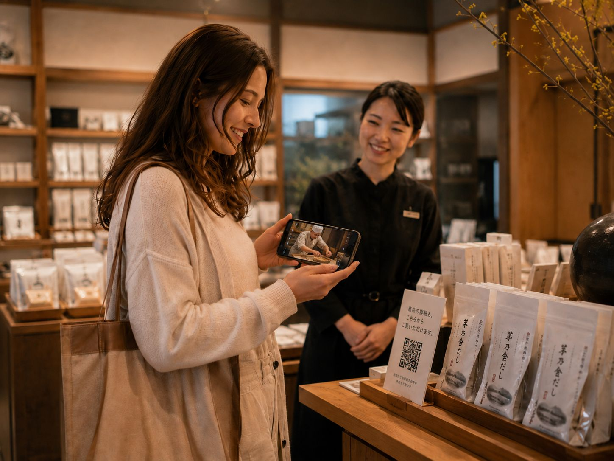
店員がお客様に語りかけるように、商品の特徴・使い方・つくり手の想いを、
お客様の母語で伝える店頭メディア。
| kayanoya.com | 世界観を伝える場。その延長を、棚の前に置きます。 |
| kubara.jp（通販） | 帰国後の購入先として、動線でつなぎます。 |
| 店舗スタッフ | 置き換えません。手が回らない時間だけ補います。 |
| 既存の商品写真・動画 | お持ちの素材はそのまま活用します。 |
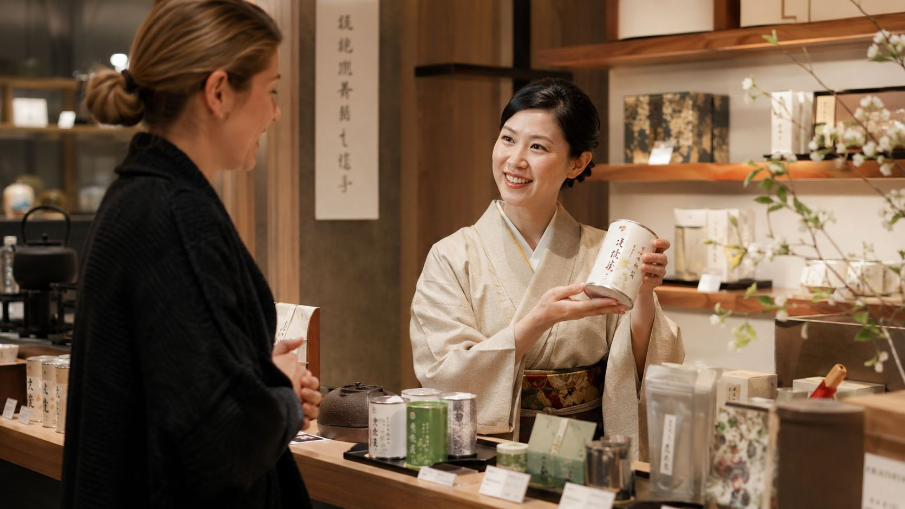
訪日のお客様の買物代は、1人あたり 6.1 万円。
その判断が、棚の前の数十秒で決まっています。
| 打ち手 | 言語 | 背景・物語 | 店頭の手間 | 関心の把握 | 語り部との関係 |
|---|---|---|---|---|---|
| 多言語の紙 POP | △ 数言語 | × 数行のみ | △ 差替が都度 | × | QR の入口として併用します |
| 翻訳アプリ | ○ | × 表記の直訳のみ | ○ | × | 原材料名は訳せても、想いは訳せません |
| kayanoya.com・通販 | △ | ◎ 充実 | ○ | △ | 棚の前で開く理由を作り、そこへ送客します |
| スタッフの多言語対応 | △ 人に依存 | ◎ | × 採用・教育 | × | 繁忙時間だけを補います |
| 語り部 | ◎ 必要な数だけ | ◎ 動画・画像 | ◎ POP 設置のみ | ◎ 閲覧データ | 棚の前で、いつでも、同じ品質で |
いずれかを置き換える提案ではありません。すでにあるものを、つなぐ提案です。
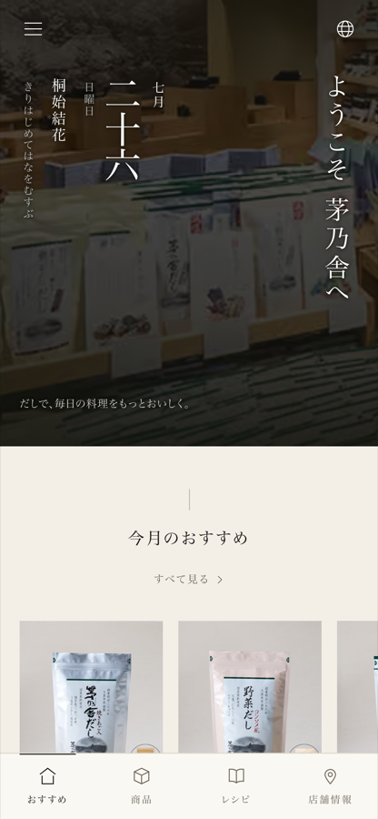
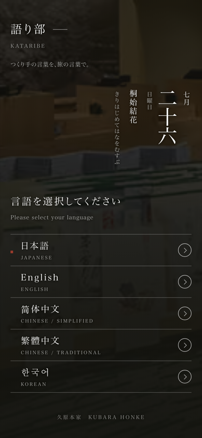
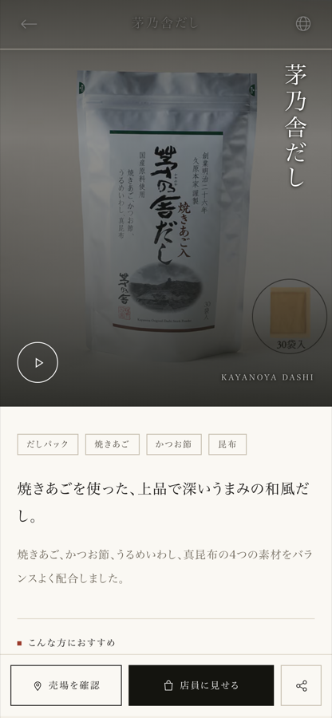
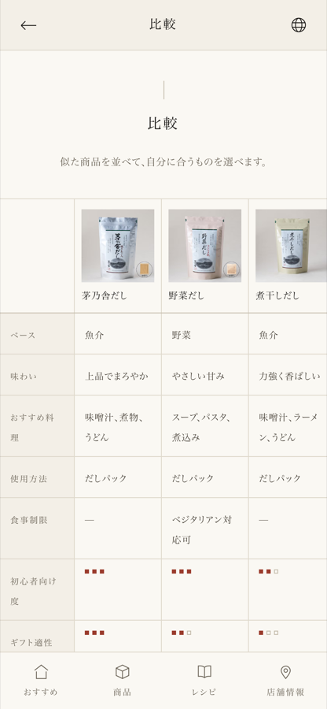
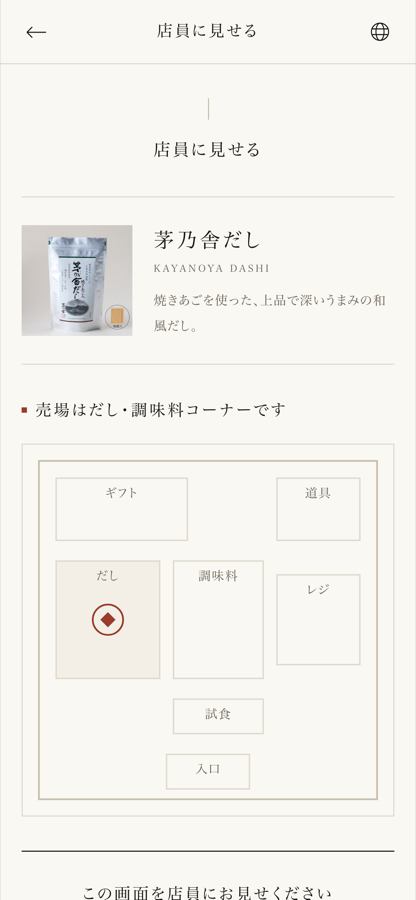
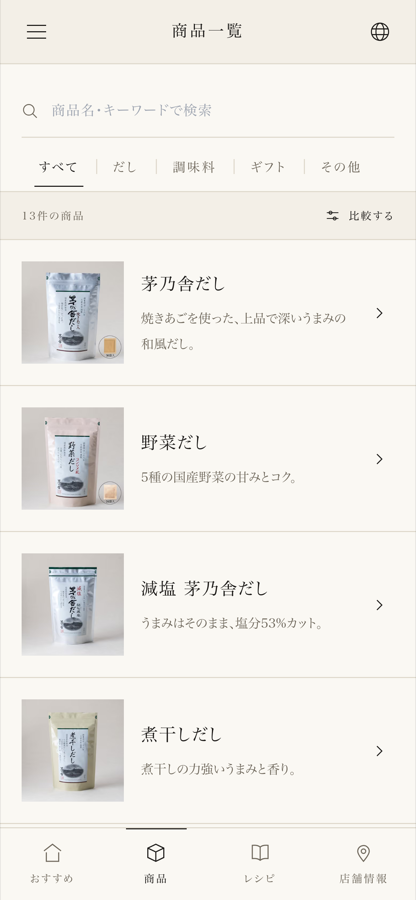
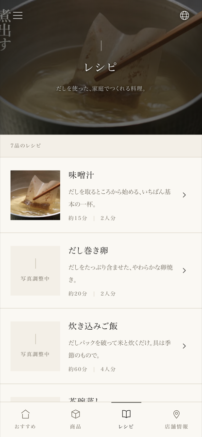
接客の省人化を目的にしていません。 店員によるリアルな接客を補い、日本のお客様が受けている説明を、訪日のお客様にも届けます。
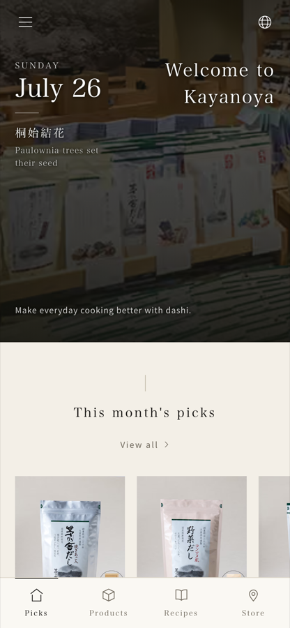
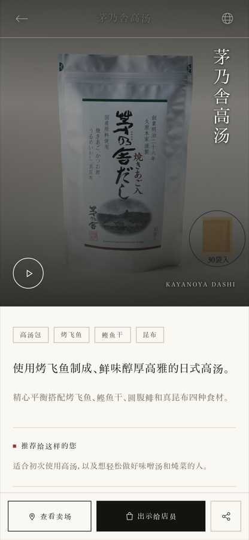
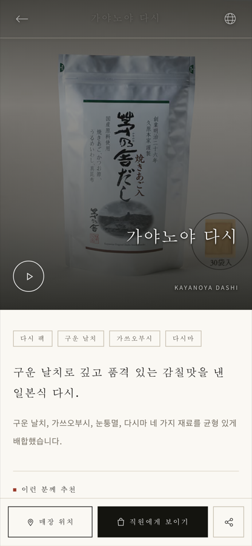
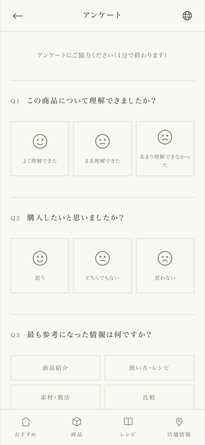
| 週 | 工程 | 内容 | 久原本家様にお願いすること |
|---|---|---|---|
| W1 | 対象の選定 | 実証店舗・対象商品（10〜15点）・設置場所の決定 | ご選定の打合せ（1時間程度） |
| W1–W2 | 撮影 | 製造現場・素材・つくり手の撮影（1〜2日） | 撮影日の調整・立ち会い |
| W2–W3 | 編集・多言語化 | 動画編集、各言語の原稿作成、ネイティブ確認 | — |
| W3 | ご確認 | 全コンテンツを画面上でご確認いただき、修正 | 内容のご確認（2時間程度） |
| W4 | POP 制作・設置 | 売場 POP のデザイン・印刷・設置、スタッフ様へのご説明 | 設置場所のご許可 |
| W5–W17 | 実証運用（90日） | 運用・月次レポート・改善。90日後に数値報告会 | 月1回のレポート確認 |
御社の実作業は、合計しても数時間です。
老舗の看板をお預かりする以上、守りの取り決めから先に固めます。
| 初期費用（設計・構築） | |
| コンテンツ制作（10〜15商品） | |
| 月額利用料 × 3ヶ月 | |
| 合計 |
| 月額利用料（1店舗あたり） | |
| コンテンツ追加制作（1商品あたり） | |
| 言語の追加（1言語あたり） | |
| 複数店舗・年間契約の割引 |
| 商号 | |
| 代表者 | |
| 設立 | |
| 所在地 | |
| 事業内容 | |
| 主な実績 |
まず、1店舗だけお預けください。数字が出なければ、そこで終わりで構いません。
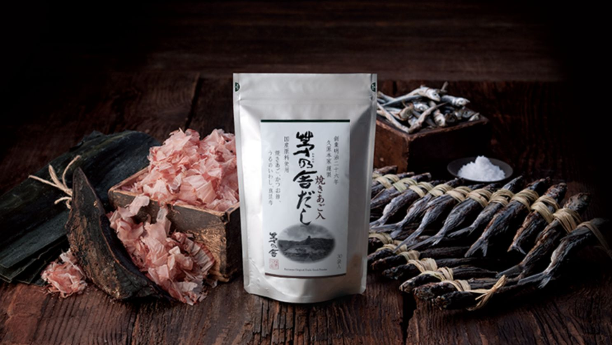
日本の商品と、世界のお客様との、新しい出会いをつくる。